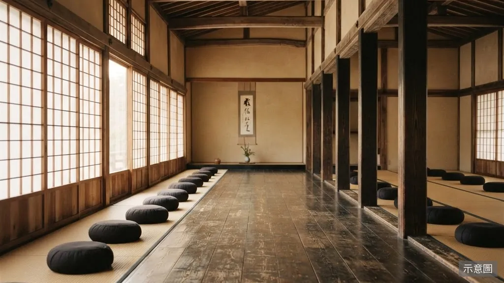
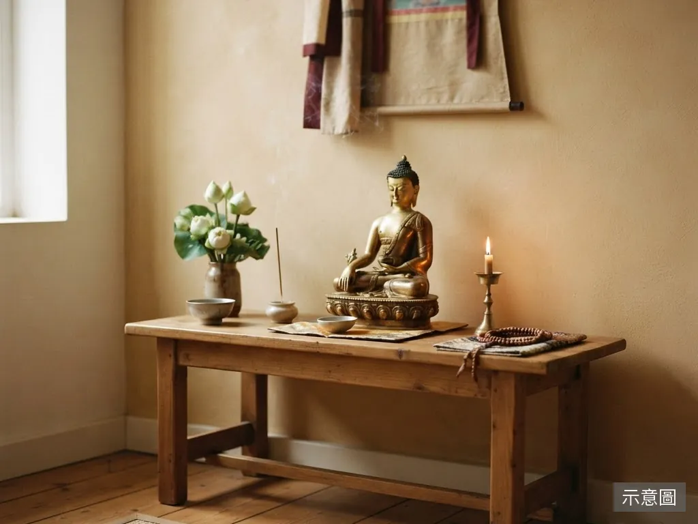

關於悟本法師
我今年六十六歲。在出家修行的路上，非常殊勝地能以上果下清老和尚為受戒大師父，承接清淨嚴謹的戒法傳承。
因緣流轉，近年由於母親年邁、需要人全心照顧，本著佛法孝親之慈悲，我選擇下山，一邊化緣護持生活，一邊侍奉老母親，並將住處樓上佈置為一處清淨的精舍，作為日常做功課之所。
出家修行不獨善其身。願透過此網頁，與有緣的佛友認識、教導學法、共修結緣。
法師簡歷
- 法名
- 悟本
- 字號
- 悟空
- 剃度本師
- 善定法師
- 剃度常住
- 桃園市法海禪剎
- 受戒寺院
- 南投埔里圓通寺
法相威儀
-
托缽 -
搭衣 -
常服
關於精舍
圓覺經舍設於住處樓上，是一處清淨簡樸的修行空間，不作大型法會之用，而是法師日常做功課、誦經禮佛的安住之所。
精舍雖小，卻承載著一份願心——願為有緣佛友提供一處可以靜心、請益佛法、共修結緣的所在，於日用之中體會佛法的清淨與慈悲。
來訪者可於此處一同早晚課誦、靜坐共修，或就佛法義理向法師請益。願以一炷清香、一聲佛號，與大眾結下善緣。

學法與共修
-
早晚課誦
每日晨昏，一同誦經禮佛，以清淨梵音收攝身心。
-
佛法請益
就佛法義理、修行疑問，向法師當面請益，解行並進。
-
共修結緣
不定期共修念佛、靜坐，與有緣佛友同修共學、結下善緣。
法務相簿
-
金色佛像 -
錫杖 -
經本 -
木魚 -
蓮花 -
禪堂窗景
聯絡師父
LINE 結緣
掃描加入，與師父結緣